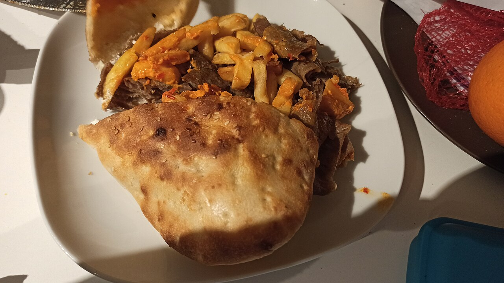
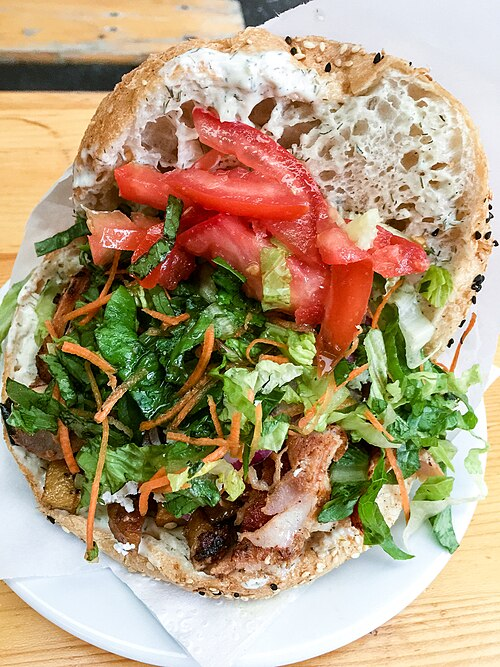
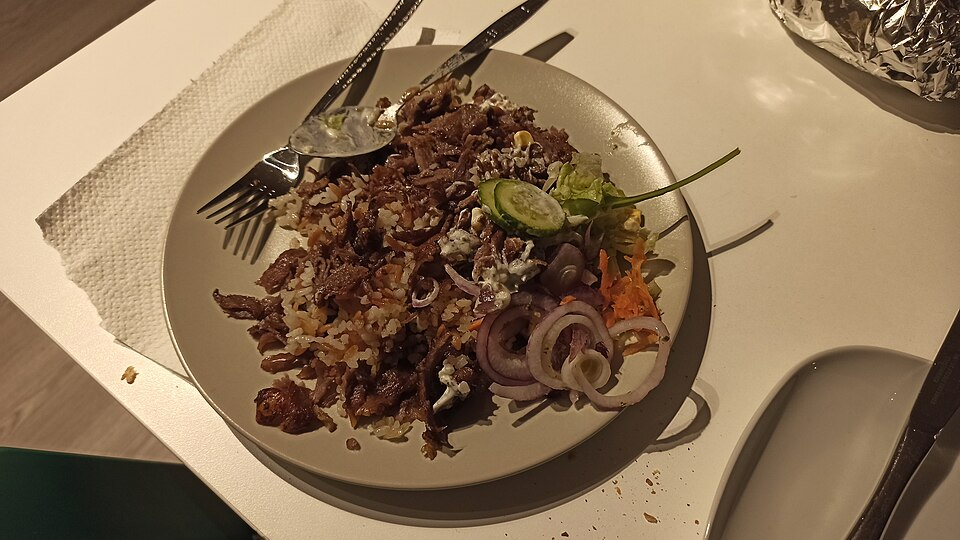

Döner am Viehmarkt in Mayen
Fleisch frisch vom Spieß, Brot aus dem Ofen, täglich ab 11 Uhr.
Besuch
Viehmarkt
Mayen
Mayen
- Montag bis Samstag
- 11:00 bis 21:00
- Sonntag
- 12:00 bis 20:00
- Feiertage
- 12:00 bis 18:00

Die Karte
Alle Preise inklusive Steuer. Zur Anfahrt
Döner
- Döner Tasche7,00 €
- Dürüm7,50 €
- Döner TellerMit Reis oder Pommes10,00 €
- Vegetarisch6,50 €
Extras
- Pommes3,50 €
- Käse überbacken1,00 €
- Extra Fleisch2,50 €
- Soße0,50 €
Getränke
- Ayran2,00 €
- Cola 0,33 l2,50 €
- Wasser2,00 €
- Tee2,00 €
Vom Spieß ins Brot
So entsteht ein Döner bei uns.

Der Spieß
Das Fleisch wird täglich frisch aufgesteckt und langsam gegart.

Der Teller
Dazu Zwiebeln, Salat und Soße, auf Wunsch scharf.

Die Theke
Bestellt wird am Fenster, gebaut wird vor Ihren Augen.